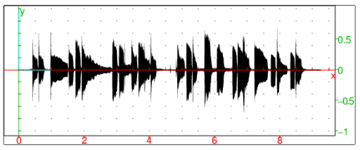
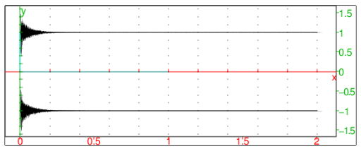
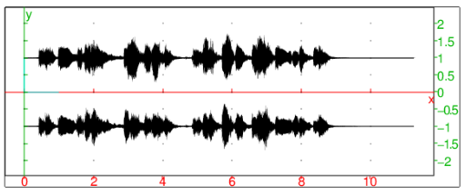

15.2.8 Convolution of two signals or functions: convolution
The convolution of two real vectors
v=[v1,…,vn] and w=[w1,…,wm] is the complex vector
z=v∗ w of length n+m−1 given by
such that vj=0 for j≥ n and wj=0 for j≥ m.
The convolution of two real functions f(x) and g(x) is the
integral
variable x as an optional third argument, in which case the
convolution takes two arguments, a real vector v
of length n and a real vector w of length m , and
returns their convolution z=v∗w
which is the vector of length N=n+m−1 defined as:
The convolution command finds the convolution of two vectors
or two functions.
For the convolution of two vectors:
-
convolution takes two arguments:
v,w, two vectors (not necessarily the same length).
- convolution(v,w) returns the convolution
correlation v∗ w.
Example
Input:
convolution([1,2,3],[1,-1,1,-1])
Output:
⎡
⎣ | 1.0,1.0,2.0,−2.0,1.0,−3.0 | ⎤
⎦ |
For the convolution of two functions:
Examples
-
Compute the convolution of f(x)=25 e2 x u(x) and
g(x)=x e−3 x θ(x), where θ is the Heaviside function:
Input:
convolution(25*exp(2x),x*exp(-3x))
Output:
⎛
⎝ | −5 x e−3 x−e−3 x+e2 x | ⎞
⎠ | θ | ⎛
⎝ | x | ⎞
⎠ |
- Compute the convolution of f(t)=ln(1+t) u(t) and
g(t)=1/√t.
Input:
convolution(ln(1+t),1/sqrt(t),t)
Output:
| − | ⎛
⎜
⎜
⎜
⎜
⎝ | 2 t ln | ⎛
⎜
⎜
⎜
⎜
⎝ | | ⎞
⎟
⎟
⎟
⎟
⎠ | +4 | √ | | | √ | | +2 ln | ⎛
⎜
⎜
⎜
⎜
⎝ | | ⎞
⎟
⎟
⎟
⎟
⎠ | ⎞
⎟
⎟
⎟
⎟
⎠ | θ | ⎛
⎝ | t | ⎞
⎠ |
|
|
|
|
- In this example, convolution is used for reverberation. Assume
that the directory sounds contains two files, a dry, mono
recording of a guitar stored in guitar.wav and a two-channel
impulse response recorded in a French 18th century salon and stored in
salon-ir.wav.
Load the files:
Input:
| clip:=readwav("/path/to/sounds/guitar.wav"):; |
| ir:=readwav("/path/to/sounds/salon-ir.wav"):;
|
Then:
Input:
plotwav(clip)
Output:

Input:
plotwav(ir)
Output:

Convolving the data from clip with both channels in
ir produces a reverberated variant of the recording, in
stereo.
Input:
| data:=channel_data(clip):; |
| L:=convolution(data,channel_data(ir,1)):; |
| R:=convolution(data,channel_data(ir,2)):;
|
The convolved signals L and R now become the left
and right channel of a new audio clip, respectively. The
normalize option is used because convolution usually results
in a huge increase of sample values (which is clear from the
definition).
- Input:
spatial:=createwav([L,R],normalize=-3):; playsnd(spatial)
Output:
A sound that sounds as if it was recorded in the same salon as the
impulse response. Moreover, it is a true stereo sound. To visualize it:
Input:
plotwav(spatial)
Output:

Note that the resulting audio is longer than the input (for the length
of the impulse response).